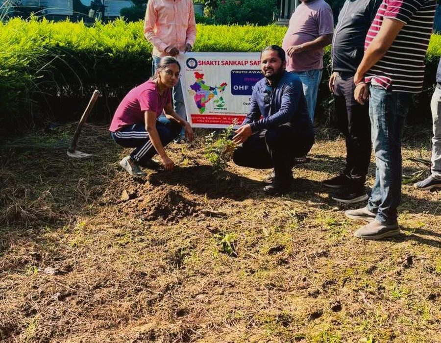
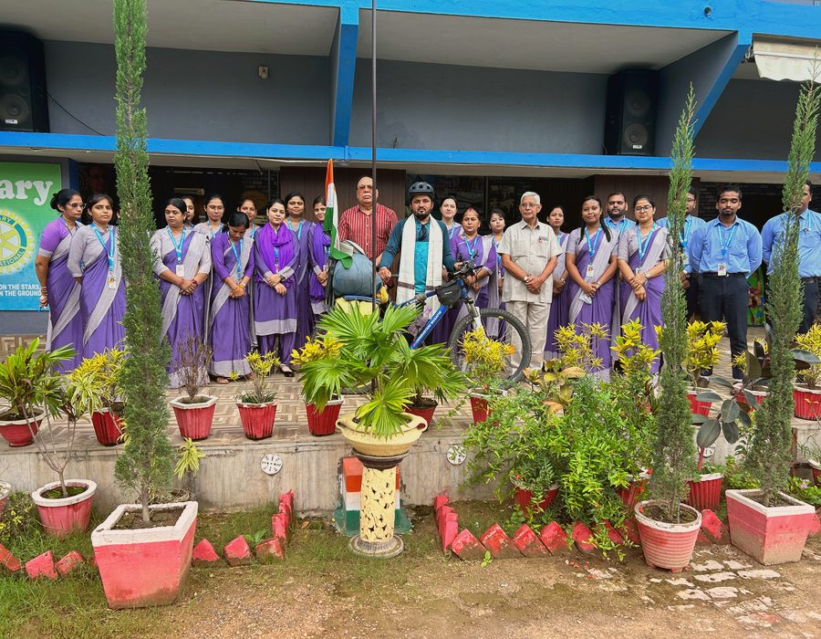
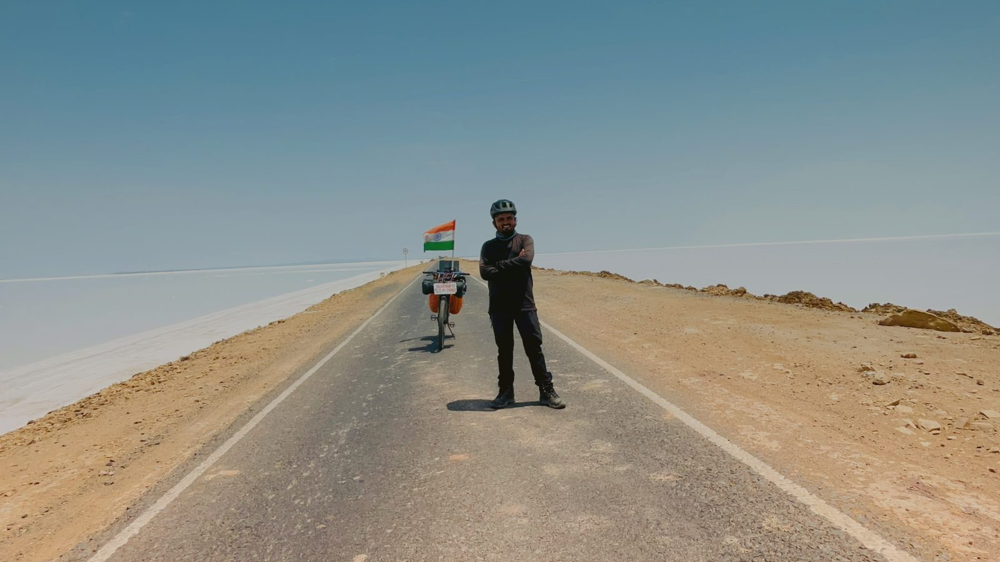

Shakti Sankalp Safar: a 60,000+ km resolve, ridden one state at a time.
“Shakti Sankalp Safar” translates to “the journey of a powerful resolve.” Since 25 April 2023, that resolve has carried Pappu Ram Choudhary across the length and breadth of India, solo, on a bicycle.
Three commitments behind every kilometre
The Safar is not measured by distance alone — each objective is tracked, reported and renewed at every stop.

Plant indigenous trees
A pledge of 1,00,000 saplings — Neem, Peepal and Banyan — planted through the OxyHunger Foundation’s “Mission 1,00,000 Trees,” with 32,500+ already in the ground.

Raise climate awareness
Public talks, school assemblies and media interactions in every state, translating a personal endurance feat into a shared call for climate action.

Promote healthy lifestyles
Road safety discipline and drug-free living, modelled through 41,000+ km of self-supported, disciplined cycling.
The path so far
A phase-by-phase look at the 60,000+ km route, from Rajasthan’s deserts to the border regions of the Northeast.
The Safar begins
Pappu sets off solo from his home village with a single target: 60,000+ km across every Indian state and union territory.
Deserts to the Himalayan foothills
Routes through Rajasthan, Punjab, Haryana and on to Jammu & Kashmir and Ladakh, crossing Khardung La and braving high-altitude passes on a loaded touring cycle.
Through the heartland and coastlines
Plantation drives and school sessions across Maharashtra, Gujarat and central India — including a stop at Mumbai’s Gateway of India — then on to Odisha and the eastern coastline.
Coast to coast
A swing through southern India’s states, engaging Rotary clubs and colleges along the way.
Into the Northeast
Crossing the Brahmaputra to Majuli Island, riding steep passes from Roing to Pasighat, and visiting the Golden Pagoda in Namsai, Arunachal Pradesh.
Silchar to Dharmanagar
Felicitated by Rotary Club members in Silchar (Cachar), then on to Dharmanagar, Tripura, after summiting Betlingchhip — Tripura’s highest peak. Crosses 39,000+ km.
The most demanding leg
Technical mountain riding from Mamit to Aizawl in Mizoram; sensitive, closely-coordinated routes from Imphal to Mao via Kangpokpi in Manipur, escorted to safety by the Assam Rifles; a summit of Mount Iso, Manipur’s highest peak.
Kohima, Dimapur & Gangtok
Welcomed in Kohima by the Governor of Nagaland and the Indian Army for a special tree-plantation activity; felicitated by the 173 and 142 Battalions of the CRPF in Dimapur; navigated landslide-prone zones in Sikkim en route to a Rotary Club of Gangtok welcome. Crosses 41,000+ km, 24 states and 8 union territories.
Toward Everest Base Camp
The final stretch of Shakti Sankalp Safar folds into full-time mountaineering preparation, culminating in Mission Everest 2027.
Tracing the Safar on a live map
An interactive Google Map tracing the Safar’s state-by-state path — from the starting point in Khimsar, Rajasthan to the current leg in the Northeast — with pins for major plantation drives, peak summits and school visits.
Open Full Route in Google Maps